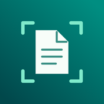

Camera Scan: A4 PDF
iPhone veya iPad kameranızla kağıt belgeleri tarayın. Birden fazla sayfayı tek PDF’te birleştirin, köşeleri düzeltin ve dosyayı paylaşın.
- Tekli ve çoklu çekimde A4 kamera kadrajı
- Dört köşeden kırpma, döndürme ve sayfa sıralama
- Renkli ve siyah beyaz belge filtreleri
- Klasörlerde saklama, filigransız PDF ve JPG paylaşımı